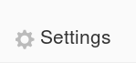
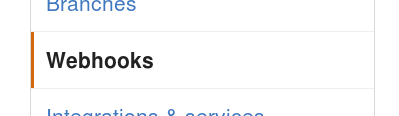
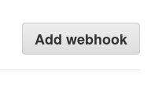
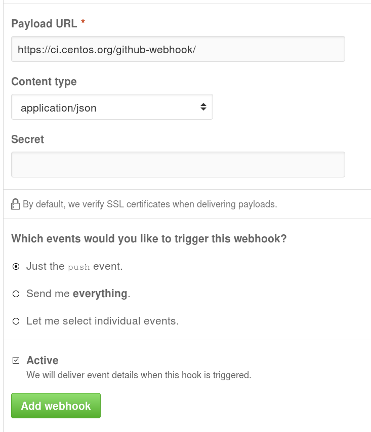
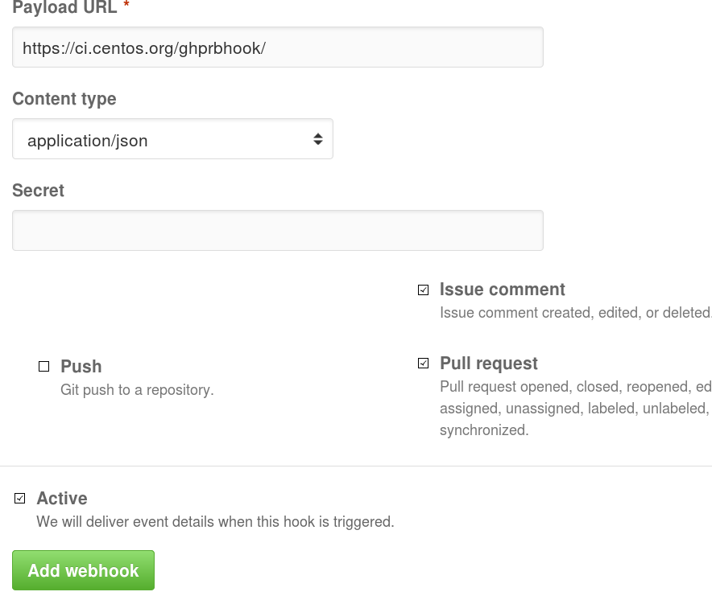
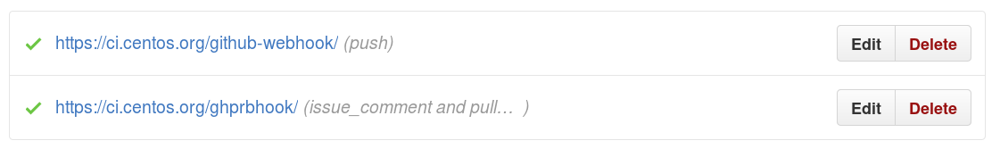
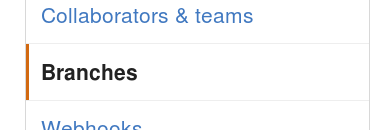
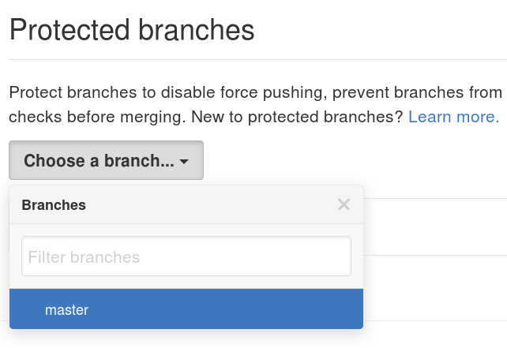
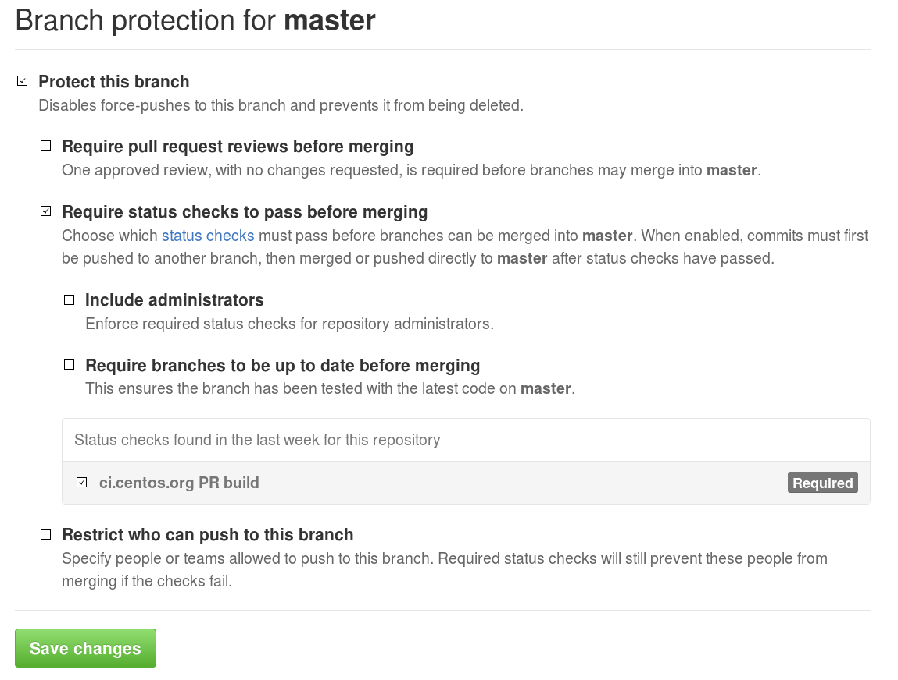

Github project settings¶
This page describes the configuration needed to setup the communication between ci.centos.org and github.
WebHooks¶
For more details, see the CentOS wiki.
Open the project settings

Select Webhooks

Click “Add a webhook” button

Create a push webhook to the url
https://ci.centos.org/github-webhook/
Click “Add a webhook” button
Create a push webhook to the url
https://ci.centos.org/ghprbhook/- select ‘Let me select individual events’
- unselect ‘Push’ and select ‘Pull Request’ and ‘Issue Comment’

Check that the webhooks are correctly configured (green)

Protected branches¶
When we have a stable repo, we can enforce ci testing by using the following steps:
Open the project settings
Select Webhooks

Select the branch you want to protect

Select “Protect this Branch”, “Require status checks to pass before merging”, unselect “Require branches to be up to date before merging”, and select “ci.centos.org”. If you do not see “ci.centos.org”, it means that there has not yet been any pull requests tests on the repo.
